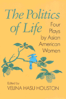

<body bgcolor="#FFFFFF" text="#000000" link="#0000FF" vlink="#CC0000" alink="#CC0000"><center><hr width="350" size="1" align="center" noshade>Pioneering work by Asian American women playwrights<hr width="350" size="1" align="center" noshade><p><a href="https://cdcshoppingcart.uchicago.edu/Cart/ChicagoBook.aspx?ISBN=9781566390002&&PRESS=temple" target="_top">Buy this book!</a> | <a href="https://cdcshoppingcart.uchicago.edu/Cart/Cart.aspx?PRESS=temple" target="_top">View Cart</a> | <a href="https://cdcshoppingcart.uchicago.edu/Cart/Cart.aspx?PRESS=temple" target="_top">Check Out</a></p><p></p></center><!--none//--><h1>The Politics of Life</h1>
<h3>edited by Velina Hasu Houston</h3>
<P>cloth 1-56639-000-1 $73.50, Jan 93, <FONT COLOR=#990033>Out of Stock Unavailable</FONT>
<br>paper 1-56639-001-X $34.95, Jan 93, <FONT COLOR=#990033>Available</FONT>
<br>Electronic Book 1-43990-616-5 $34.95 <FONT COLOR=#990033>Out of Stock Unavailable</FONT>
<BR> 288 pp
6x9
</P><p>This anthology of work by three Asian American women playwrights&#151Wakako Yamauchi, Genny Lim, and Velina Hasu Houston&#151features pioneering contemporary writers who have made their mark in regional and ethnic theatres throughout the United States. In her introduction, Houston observes that the Asian American woman playwright is compelled "to mine her soul" and express the angst, fear, and rage that oppression has wrought while maintaining her relationship with America as a good citizen.
<p>The plays are rich with cultural and political substance and have a feminist concern about women's spirit, intellect, and lives. They portray Asian and Asian American women who challenge the cultural and sexual stereotypes of the Asian female. Yamauchi's two plays deal with how easily a country can dishonor its citizens. In "12-1-A," a Japanese American family is incarcerated during World War II in an Arizona camp where Yamauchi herself was interned. "The Chairman's Wife" dramatizes the life of Madame Mao Tse Tung through the lens of events at Tien An Men Square in 1989. Lim's "Bitter Cane" is about the exploitation of Chinese laborers who were recruited to work the Hawaiian sugar cane plantations. In "Asa Ga Kimashita" ("Morning Has Broken"), Houston explores a Japanese woman's interracial romance in postwar Japan and the influence of traditional patriarchy on the lives of Japanese women.
<p>These plays will entertain and enlighten, enrage and profoundly move audiences. With honesty, imagination and courage, each grapples with the politics of life.
<BR>&nbsp;<h2>Contents</h2><P>
<p>Acknowledgments
<br>Introduction
<br>1. Wakako Yamauchi
<br>2. <I>12-1-A</I>
<br>3. <I>The Chairman's Wife</I>
<br>4. Genny Lim
<br>5. <I>Bitter Cane</I>
<br>6. Velina Hasu Houston
<br>7. <I>Asa Ga Kimashita (Morning Has Broken)</I>
</P><BR>&nbsp;<H2>About the Author(s)</H2>
<table><tr><td valign="top"><img src="/tempress/authors/940_au.gif" height="90" width="75"></td><td width="100%" valign="middle"><p><b>Velina Hasu Houston</b> teaches in the University of Southern California's School of Theatre and is the author of "Tea," one of the most produced plays about the experience of Asians in America.</P></td></tr></table>
<BR><H2>Subject Categories</H2>
<p><A HREF="/tempress/asian_amer.html" TARGET="_top">Asian American Studies</a>
<BR><A HREF="/tempress/literature.html" TARGET="_top">Literature and Drama</a>
</p>
<BR><h2 class="inpageheading">In the series</H2>
<P><I><a href="http://www.temple.edu/tempress/asam_history.html" onMouseOver="window.status='Click for other books in this series!'; return true;" onMouseOut="window.status=''; return true;" target="_top">Asian American History and Culture</a></i>, edited by K. Scott Wong, Linda Trinh V�, and Cathy Schlund-Vials.
</p><p>Founded by Sucheng Chan in 1991, the <I>Asian American History and Culture</I>, series has sponsored innovative scholarship that has redefined, expanded, and advanced the field of Asian American studies while strengthening its links to related areas of scholarly inquiry and engaged critique. Like the field from which it emerged, the series remains rooted in the social sciences and humanities, encompassing multiple regions, formations, communities, and identities. Extending the vision of founding editor Sucheng Chan and emeriti editor Michael Omi and David Palumbo-Liu, series editors K. Scott Wong, Linda Trinh V�, and Cathy Schlund-Vials continue to develop a foundational collection that embodies a range of theoretical and methodological approaches to Asian American studies.</p>
<p align="center"><a href="https://cdcshoppingcart.uchicago.edu/Cart/ChicagoBook.aspx?ISBN=9781566390002&&PRESS=temple" target="_top">Buy this book!</a> | <a href="https://cdcshoppingcart.uchicago.edu/Cart/Cart.aspx?PRESS=temple" target="_top">View Cart</a> | <a href="https://cdcshoppingcart.uchicago.edu/Cart/Cart.aspx?PRESS=temple" target="_top">Check Out</a></p><p><font face="Arial" size="1"><a href="copyright.html" onMouseOver="window.status='Web Copyright Policy';return true;" onMouseOut="window.status=''" title="Web Copyright Policy">&copy;</a> 2015 <a href="http://www.temple.edu" target="new" onMouseOver="window.status='Link to Temple University home page';return true;" onMouseOut="window.status=''" title="Link to Temple University home page">Temple University</a>. All Rights Reserved. http://www.temple.edu/tempress/titles/940_reg.html</font></p>